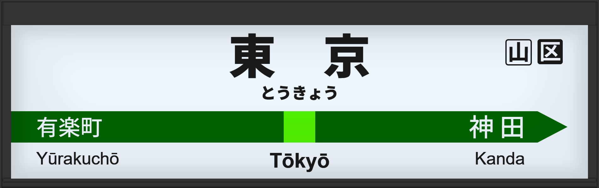

| ←有楽町 | ■ 山手線 | 神田→ |
|---|
1998年7月に初期型ATOS放送を導入。
2006年2月には旧型ATOS放送に更新。接近放送の文面が「黄色い線まで～」となる。
2013年12月には常磐改良型に更新。
2016年4月宇都宮型に更新。5番線の声優が津田英治氏から田中一永氏に交代。
2020年1月に宇都宮改良型に更新。接近放送の文面が「黄色い点字ブロックまで～」となる。
| 4 |
■ 山手線 上野・池袋方面 |
4番線接近放送 到着放送（「21世紀記念列車215号」到着時） |
放送は「上野・池袋方面行」です。 初期型でした。 到着放送はこの頃はまだ設定されておらず、215系による「21世紀記念列車215号」で追加時とは異なるパーツでの駅名連呼が流れました。 |
|---|---|---|---|
| 5 |
■ 山手線 品川・渋谷方面 |
5番線接近放送 |
放送は「品川・渋谷方面行」です。 初期型でした。 |
| 4 |
■ 山手線 上野・池袋方面 |
4番線接近放送 |
放送は「上野・池袋方面行」です。 継ぎ接ぎでした。 |
|---|---|---|---|
| 5 |
■ 山手線 品川・渋谷方面 |
5番線接近放送 |
放送は「品川・渋谷方面行」です。 継ぎ接ぎでした。 |